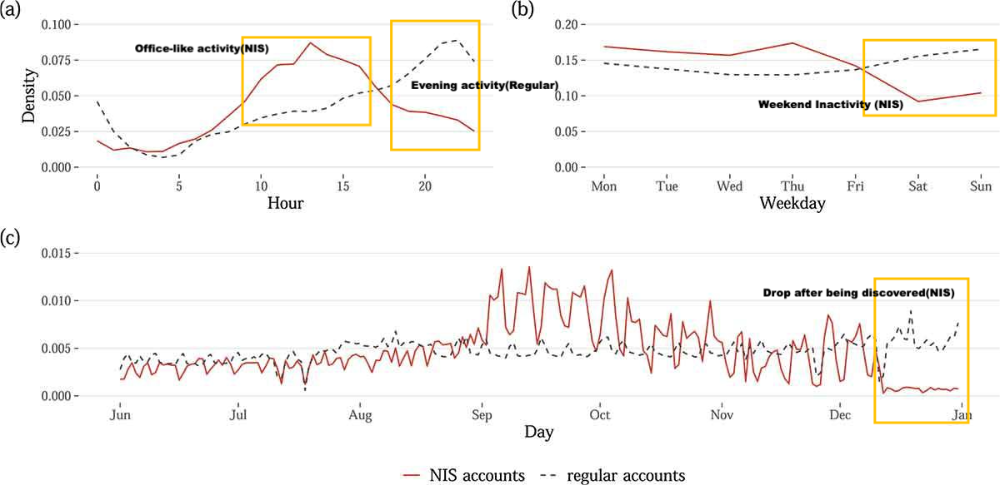
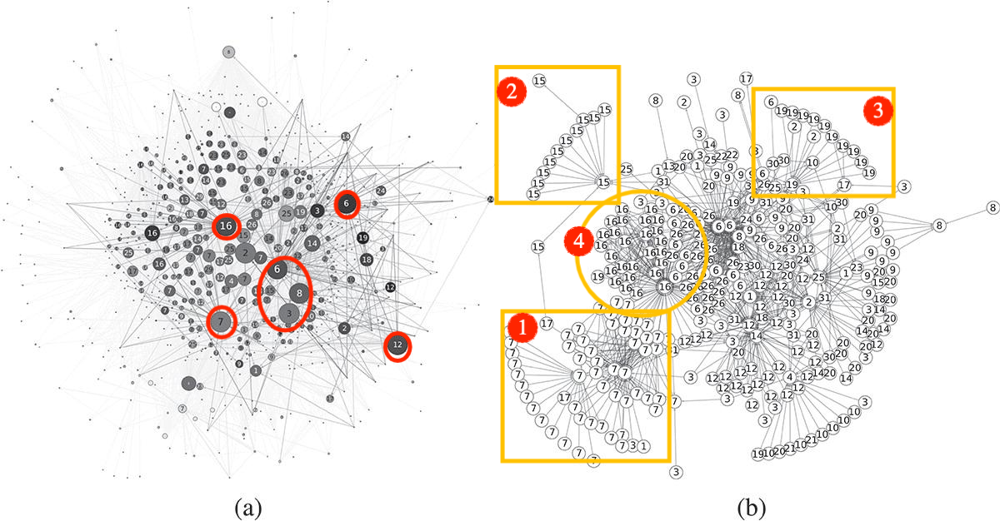
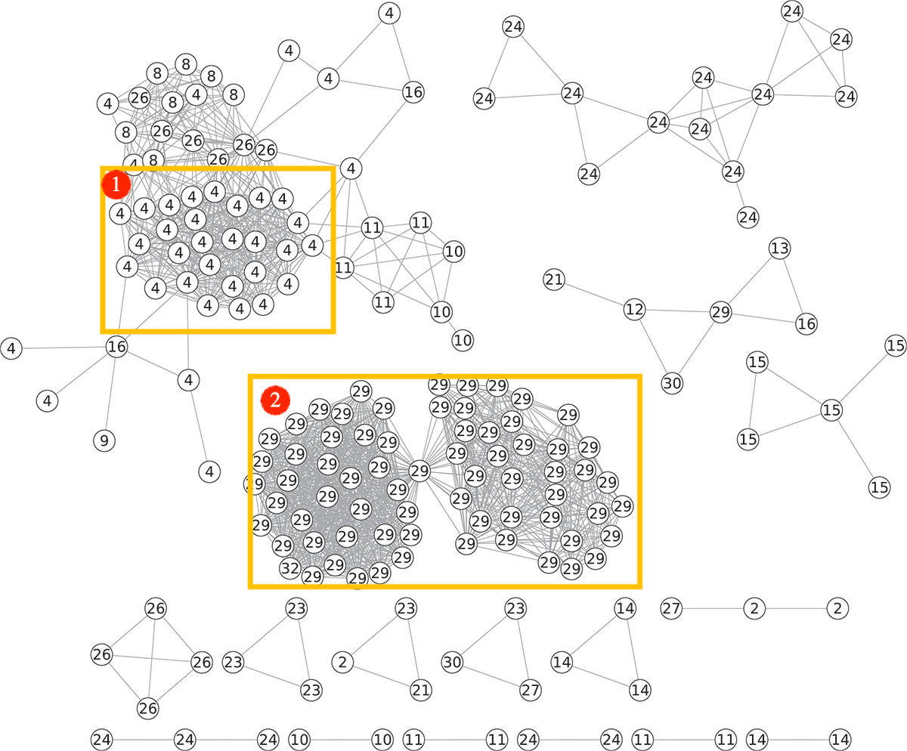

1. Introduction
In 2012, South Korea’s National Intelligence Service manipulated the presidential election by running accounts on Twitter. NIS agents posted to influence opinion in favor of Park Geun-hye. This campaign was professionally organized, with native-speaker agents adjusting posts daily. For months, the operation remained undetected. The campaign’s discovery sparked broader interest in how NIS ran this campaign and why it failed.
2. Behavioral Patterns of the South Korean Disinformation Campaign
2.1 Timing Pattern
Figure 1 illustrates the temporal behavior of NIS accounts compared to regular users. The differences reveal a structured, workday schedule pattern—suggesting the activity was carried out by agents operating on assigned schedules rather than ordinary social media users.

From panel (a), we can clearly observe that NIS accounts were more active during regular working hours, while their activity dropped significantly after office hours. In contrast, regular users were more active after working hours.
Panel (b) shows NIS activity drops sharply on Saturdays and Sundays, while regular users actually become more active.
Panel (c) suggests the NIS tweet suddenly stop their tweeting after they were discovered on December 11.
By using the office-hour activity pattern, the researchers were able to identify and validate 824 additional suspicious NIS accounts.
2.2 Message Amplification Strategies
2.2.1 Retweeting Within the Network
Retweeting refers to one account amplifying another account within the same group or agent. Up to 48% of retweets were made within the NIS network. The density and darkness of connections in the retweet network highlight this varied pattern—some agents showed strong internal coordination, while others retweeted inconsistently.

In panel (a), the larger nodes represent accounts that received more retweets from other NIS accounts; the darker the node, the higher the percentage of its retweets within the NIS network. This structure reveals targeted amplification rather than organic engagement.
From panel (b), we can see a clearer structure of the retweeting strategy. Within clusters(highlighted in yellow), the agents 7, 15, 16 and 19 created one or two central accounts, retweeting within themselves. While other agents show a coordinated strategy, retweeting each other.
2.2.2 Co-tweeting: Copy-Paste Tweets
Co-tweeting refers to multiple accounts posting identical content within short time windows. Researchers found that 85% of these co-tweets occurred within one minute, and 99% within a typical 10-hour workday—indicating highly disciplined timing.

Figure 3 shows the co-tweeting network of NIS accounts. Each node represents an account, and edges connect accounts that posted the same message within a short time window. Rather than forming one large connected network, the accounts are divided into small clusters. This suggests that agents operated independently, each managing their own set of accounts.
The two dense clusters—labeled (1) and (2)—show groups of accounts assigned to agents 4 and 29, respectively. Each cluster reveals accounts acting like a copy-paste unit, posting identical tweets in parallel. These clusters are internally dense but disconnected from each other, reinforcing the decentralized structure of the campaign.
This copy-paste pattern became a powerful detection strategy: accounts that co-tweeted repeatedly and tightly clustered around known agents were flagged as highly suspicious.
2.2.3 Co-Retweeting: Coordinated Sharing of the Same Content
Co-retweeting occurs when multiple accounts retweet the same tweet within a short time window. In this campaign, only 17% of retweets were unique—most were repeated. Although co-retweets were more temporally dispersed than co-tweets, 20% occurred within one minute and 99% within a week—suggesting sustained, low-profile coordination.
Though 440 co-retweeters were flagged as bot-like after manual review, co-retweeting patterns helped narrow down potential campaign accounts.
3. Misaligned Agents, Missed Impact
3.1 Limited Persuasion in South Korea
The South Korean disinformation campaign was highly coordinated but overly rigid. Agents followed fixed office schedules, used copy-paste tweets, and lacked creative input. With limited incentives and a reliance on traditional text-based posts, the campaign failed to engage audiences persuasively. Its limited impact reflects a classic principal-agent problem: centrally directed agents had little motivation.
3.2 A Similar Structure in Russia’s IRA Campaign
This kind of misalignment between principal and agent is not unique. As Josephine Lukito (2019) shows, the Russian Internet Research Agency exhibited a similar dynamic: agents received centrally assigned tasks every morning, were required to meet daily quotas, and were evaluated based on engagement metrics. This rigid, top-down management left little room for strategic creativity, leading to persistent goal misalignment.
3.3 Memes as a Strategy
In contrast, Mihăilescu (2024) shows how memes serve as a more interactive, efficient, and emotionally persuasive form of political communication. By drawing on shared cultural references and humor, memes engage audiences emotionally, foster participation, and amplify political narratives. Catchy memes transform plain content into scalable social engagement.
3.4 India’s Hybrid Strategy
The 2019 Indian general election offers a more dynamic hybrid campaign configuration. The Bharatiya Janata Party (BJP) adopted a hybrid strategy that combined centralized coordination with decentralized, volunteer-driven execution. This approach relied heavily on loosely connected WhatsApp groups, enabling broader participation and greater adaptability. As a result, the BJP was able to sustain a “permanent campaign” at low cost.